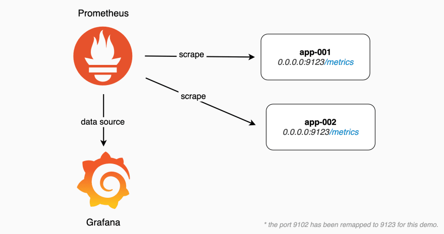

Description du projet
Ce projet vise à mettre en place un système de supervision et de visualisation des performances des machines virtuelles d’un environnement réseau. Grâce à Prometheus pour la collecte des métriques et Grafana pour l'affichage, il est possible d’avoir un aperçu clair et temps réel de l’état des infrastructures.
Ce système permet d’anticiper les pannes, d'optimiser les ressources et d'améliorer la stabilité globale de l’environnement.
Qu’est-ce que Grafana ?
Grafana est une plateforme open-source permettant de créer des tableaux de bord interactifs pour visualiser des données métriques, logs ou traces en temps réel.
En connectant Grafana à diverses sources de données (comme Prometheus), il devient possible de surveiller l’état d’un système informatique de manière claire, intuitive et personnalisée.

La Partie Prometheus
Prometheus est un système de surveillance open-source conçu pour collecter des métriques provenant de différents services. Il extrait automatiquement les données à intervalles réguliers et les stocke efficacement pour pouvoir les interroger par la suite.
Dans ce projet, Prometheus est utilisé pour récupérer les métriques de performance des machines virtuelles hébergées sur Proxmox, ensuite visualisées sur Grafana.
Documentation complète
Accédez à la documentation du projet : configuration de Grafana, dashboards, collecte des métriques.
Voir la documentation